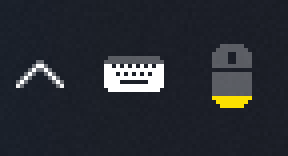

只读查询，从不改设置
只发送白名单内的电量与状态指令，绝不写入 DPI、回报率或宏配置，查完即释放设备；厂商软件打开时自动退让。
把无线鼠标、键盘和耳机的电量放上 Windows 任务栏。
国内镜像暂时读不到最新版本信息，也可以 从 GitHub 下载。
所有无线外设，一处看全
点击右侧面板里任意设备行可切换顶部主卡片，也可点击下方按钮触发互动。
实时交互演示 · 基于几格真实界面样式构建，点击上方标签或任务栏图标即可体验（演示数据）
在厂商软件里把灵敏度和回报率设好以后，几格直接向 USB 接收器查询电量。后台少一个沉重的厂商常驻程序。
只发送白名单内的电量与状态指令，绝不写入 DPI、回报率或宏配置，查完即释放设备；厂商软件打开时自动退让。

Windows 11 可在通知区左侧直接横排显示图标和百分比；Windows 10 或空间紧张时自动切换底部填充的水位图标，红黄绿一眼分辨。
开黑打排位时不弹窗、不切出画面，自动把查询放慢到 5 分钟一次。低电量提醒会安静排队，等你回到桌面再提示。
NativeAOT 原生编译，平时不发起任何网络请求。只有你手动点击「检查更新」才连接国内镜像；诊断报告导出前先由你亲自审阅。
支持主流 2.4 GHz USB 接收器与 Windows 蓝牙电量读取。「已实机验证」为作者真机实测确认，「按资料适配」依据公开协议实现。
安装后在几格里点「检查更新」即可无损升级，所有设置与设备备注都会保留。
安装包暂未购买商业代码签名证书，首次运行时 Windows SmartScreen 可能拦一下。点「更多信息」，再点「仍要运行」即可。不放心的话，可以先下载 SHA256SUMS.txt 在 PowerShell 里核对安装包哈希。
Windows 10 的任务栏结构与 Windows 11 不同，几格会自动改用托盘水位图标显示电量。悬停卡片、主面板与低电量提醒全部照常可用。
不用。在厂商驱动里调好 DPI、回报率、灯光后就可以关掉。官方软件打开时可能会占用接收器，此时几格会自动退让并保留上次读数。
不会。几格平时完全不联网。诊断报告只在你主动导出时生成并保存在本机，先用记事本打开给你核对，不含序列号、电脑名、用户名或任何键鼠输入。
可以在几格里导出诊断报告，到 GitHub 提交设备适配反馈。详细步骤见 CONTRIBUTING.md。